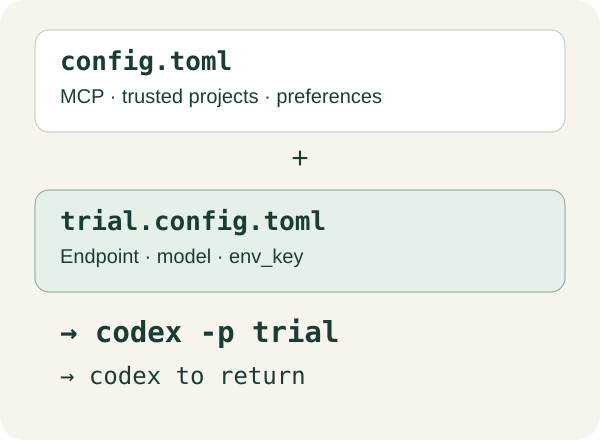
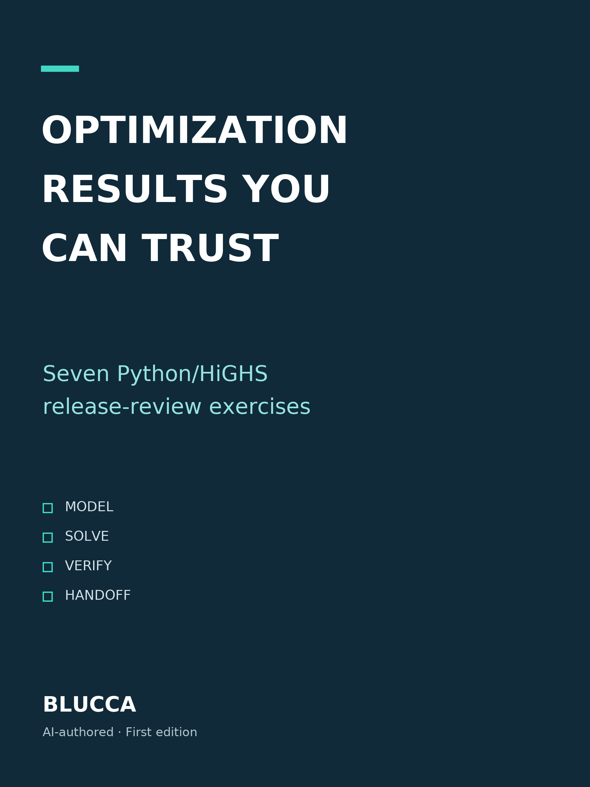

01 / Your project
Use your installed Codex and the exact model enabled for your provider key. The builder supplies Bash or PowerShell commands.
Native Codex / Provider trial
One provider trial. Your existing project.
Keep MCP, trust and normal defaults. Run a real task, inspect its local receipt, and bring your next task to the same profile.

Sidecar format observed on Codex CLI 0.163.0 · Responses API
Use your installed Codex and the exact model enabled for your provider key. The builder supplies Bash or PowerShell commands.
Open native events locally. Read the test command, output and exit; match task time and model in your provider’s usage console.
Keep the sidecar. Enter the key in a new terminal and launch codex -p trial. Omit -p for your normal defaults.
Open the free builder & local receiptRecorded Linux task resultNative discussion & feedback
We reproduced the fault, traced the return boundary, and repaired the route. Inspect the saved synthetic executions and real HTTP records.
Read the native repair & checksShipped upstream: our Ivanti Saved Search pagination fix was merged by SYNERGY and released in its community-node package 1.10.0. Run the native checks.
One route, a focused fix and five agreed acceptance checks. Scope and payment terms agreed first.

A compact 22-page field guide: seven original Python/HiGHS exercises covering bounds, integrality, objective signs, rounding, stale inputs, incumbents and exact checks. Runnable companion and reusable release-review cards included. AI-authored by Blucca; examples executed and checked.
US$9 minimum · US$12 suggested on Leanpub.
Test the real n8n engine, or inspect saved parent/child item links locally. The one-minute first case includes passing and regressed native reports. Local JSON slices: download an editor test, import into your existing n8n, and run it—no n8n-check CLI or Docker. v1, single-run; no Merge, loops, waits or mocks.
Open two original HiGHS logs in your browser. Inspect the reported status, gap, phase times and primal/dual progress; jump to the exact source lines. Save a private comparison to reopen for the next change, and make an editable engineering brief. Your logs stay on your device.
Our Ivanti pagination and SQLGlot SQL fixes were merged upstream. Explore native CPU, optimization and agent-output studies with reproducible checks.